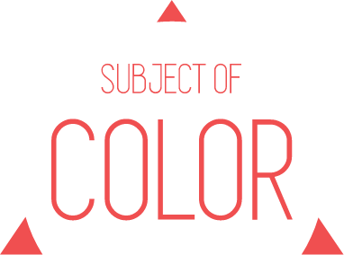

"Subject of Color" is a VR minigame experiment created with Playcanvas.
The game exposes the player to room subsequently colored in different values, hues and saturation.
Feel free to view and fork the project source at Playcanvas.com